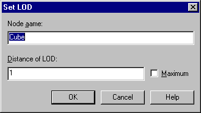

The following tabs are available in the LOD (Level of Detail) Node Properties dialog box:
Select the [LOD] tab to view the object nodes linked to each LOD level. Object nodes are listed according to distance. An option for modifying LOD distances is also provided under the [LOD] tab.

To modify LOD distances, select the target node then click [Modify], or double-click the target node. The [LOD Settings] dialog box will appear.

In the LOD Settings dialog box, the name of the currently selected node is displayed. Use this dialog box to change the node name and to specify the [LOD distance]. To continuously display the object, check the [Maximum] box. After providing the LOD settings, click [OK]. The nodes are automatically sorted according to LOD distance.